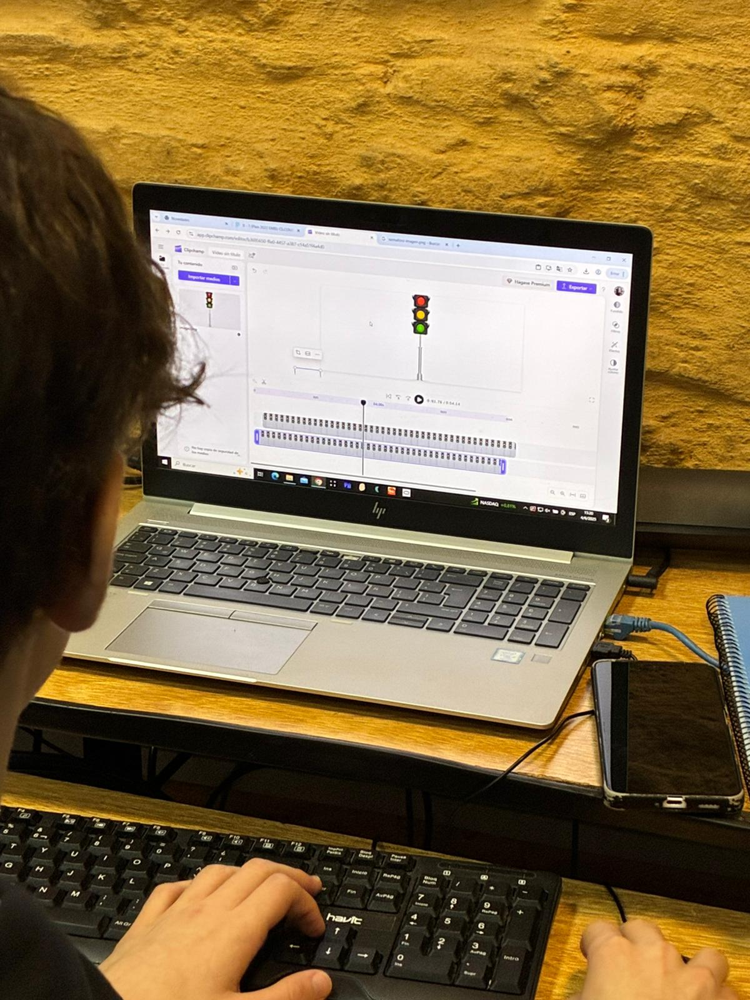

Este equipo se encarga del desarrollo y la programación tanto de la placa Micro:bit como del software necesario para el correcto funcionamiento del semáforo. Este grupo está intergado por Franco Alberti, Tirso Caputi, Belen Fernández y Bautista Viera
